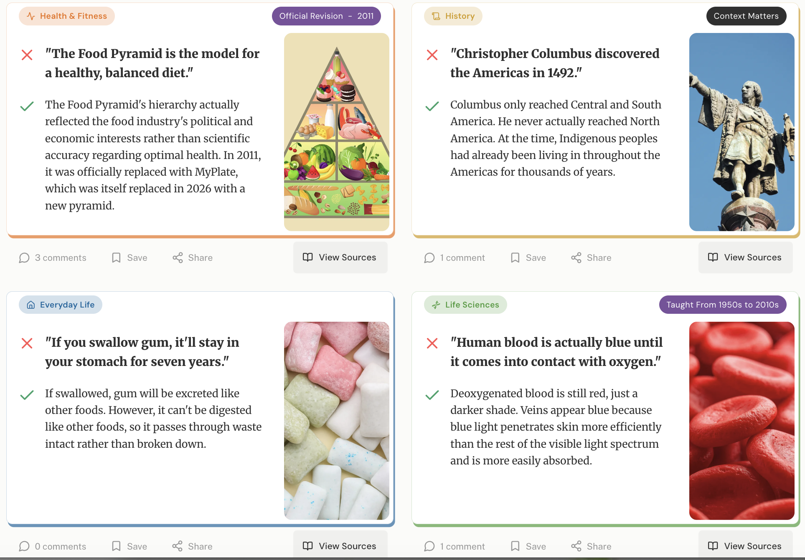
Designing an inclusive knowledge-discovery platform around a problem thousands of social media users thought was impossible to solve.

I identified an internet-wide unmet user need, validated it using thousands of organic user comments, designed around seemingly contradictory user requirements, shipped an MVP, and iterated it into a product that reached millions of people.
A few others have made their own versions of this site, but none had gained enough traction to be easily found. The only exception I've found is What They Got Wrong, which launched in March 2026 when Retrocodex's user dashboard was in progress.
Other versions of this site are:
In September 2025, I came across a viral post that had been circulating online since 2020 and had been reposted at least a hundred times.


Because of the topic struck a nerve with thousands of users, they let out their frustration in the comments, complaining of several topics they'd been taught by teachers and family members that later turned out to be untrue.
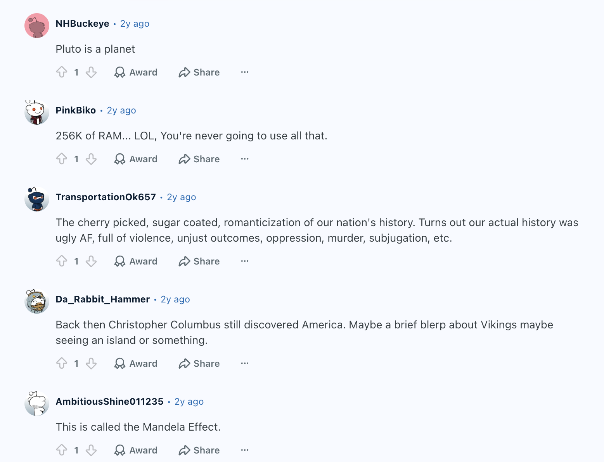
How might we design a platform that helps users discover outdated information they may have learned, while acknowledging that:
Frustrated users repeatedly named "facts" they were taught that were later overturned or never true: Pluto is a planet, blood is blue until it hits oxygen, Marie Antoinette's "let them eat cake." These topics ranged from academic facts taught by teachers to old wives' tales and urban legends.
Through five years of persistent demand the website exist, not even an AI-generated version had gained proportional traction. Upon analyzing user comments, I assumed the bulk of the reasons had to do with the fact that most of these topics had no official date when they were overturned in curricula or public belief.
These commonly recurring themes were probably significant deterrents to the site's existence:
This means the original "input the year you graduated" discovery architecture was factually impossible. I decided to give up on building the site until I realized that I could classify facts by subject instead: history, life sciences, social sciences, gender & sexuality, and more.
Alongside learning more about what outdated or untrue lessons people throughout the world were taught, I ran my own survey with 15 people interested in the concept, exploring their experiences discovering that parts of their education were outdated or untrue. I recruited participants from my friends and from general and social impact tech meetups in San Francisco.
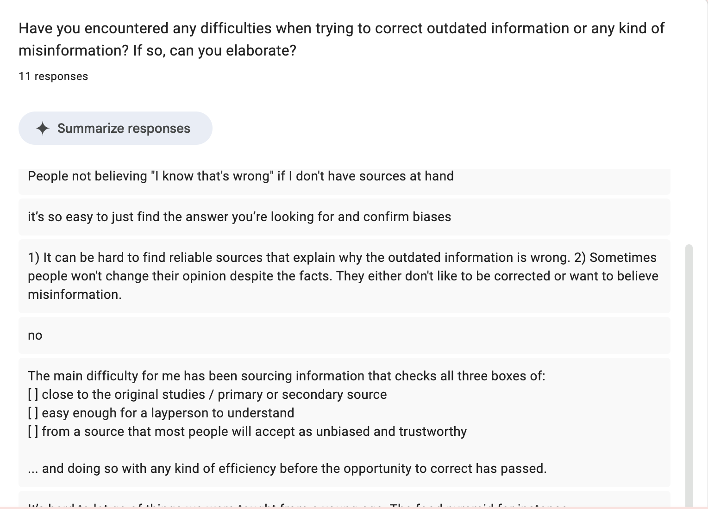
For the site's encyclopedic content, I researched "common misconceptions we were taught" round-ups and chose 100 of the most commonly repeated facts — leaving the rest open for user submissions.
While primary research was pending, I revisited the social discussions, this time focusing on comments discussing the website concept itself in a technical perspective beyond its factual content. Several concerns and feature demands kept surfacing. Users wanted:
These insights dramatically evolved the original design objective.
Even if a scientific study or sturdy historical evidence debunked a fact, my research told me that its teaching often continued to circulate in academia and/or in popular culture through community and media. It often took several studies for a certain fact to phase out of repetition and many debunked myths continue to be still spread today, such as "you only use 10% of your brain".
Assigning a single cutoff year would create false precision and would not lead to universally accurate results.. The only facts I could assign single years to were ones that were officially overturned by an governing body, like a Food Pyramid revision or a country renaming or splitting. On the site, these fact cards are labeled "Official Revision" with the year they were revised.
Many social media user comments fell along the lines of "You were taught that in 1985? My kid is being taught this now even though it was disproven in the 1970s!" or "What school did you go to? When my girlfriend also went to school at the same time in the South, she was taught it the right way."
Instead of pretending every fact was definitely debunked and was updated in academia and popular culture in a specific year, I ensured the user experience made these varying timelines clear. Every page explains that:
I organized knowledge by graduation decade instead of year. This approach is intended to accomodate gradual curriculum change.
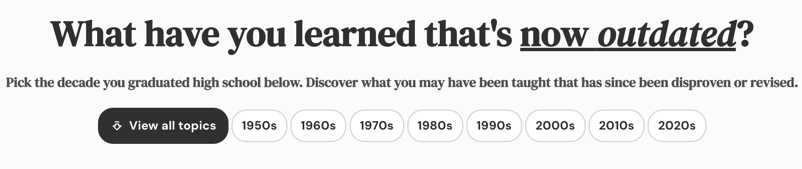
The original website prompt specifies facts that are revised after the user has finished school. However, many users reported being taught facts that had already been disproven at the time of teaching.
Instead of authoritatively declaring "these are the lies you were taught", I aimed for a "this is what you may have been taught that was later disproven, or was already disproven when you learned it yet circulated anyway". This communicates that the site is inclusive of both facts that evolved andfacts that were already outdated or a myth when users were taught them.
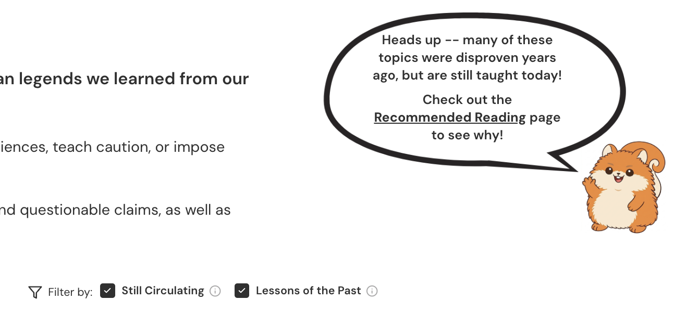
Each fact entry also has a poll asking the user if they were taught the fact or not. The poll collects voluntary data and serves the UX perspective of reinforcing the site's ethos that learning varies.
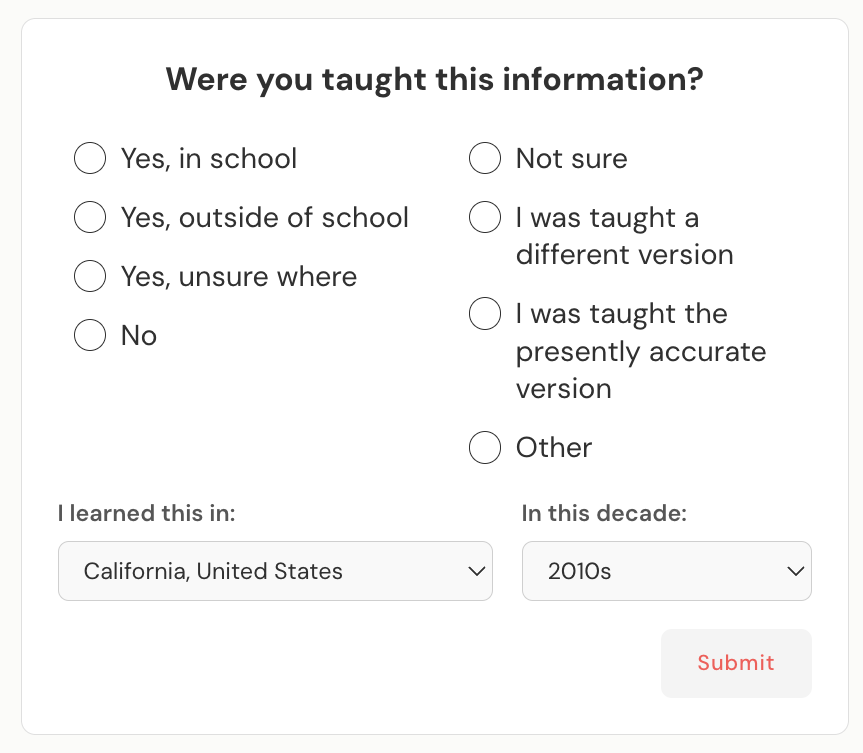
As previously stated, regions varied when facts were phased out of teaching. However, what facts users were taught also varied by region. Users consistently said: "Everything depends on where you went to school. If I went to school in South Africa, I don't expect to have learned the same facts as someone from California." Instead of treating location as metadata, I made it part of the product's social experience. Users can:
The result turns Retrocodex from a static archive into a geographically contextual knowledge community.
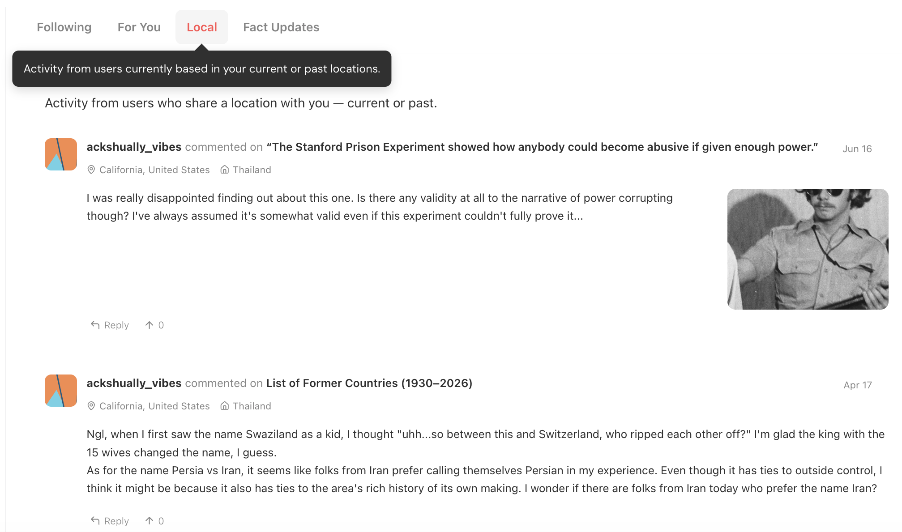
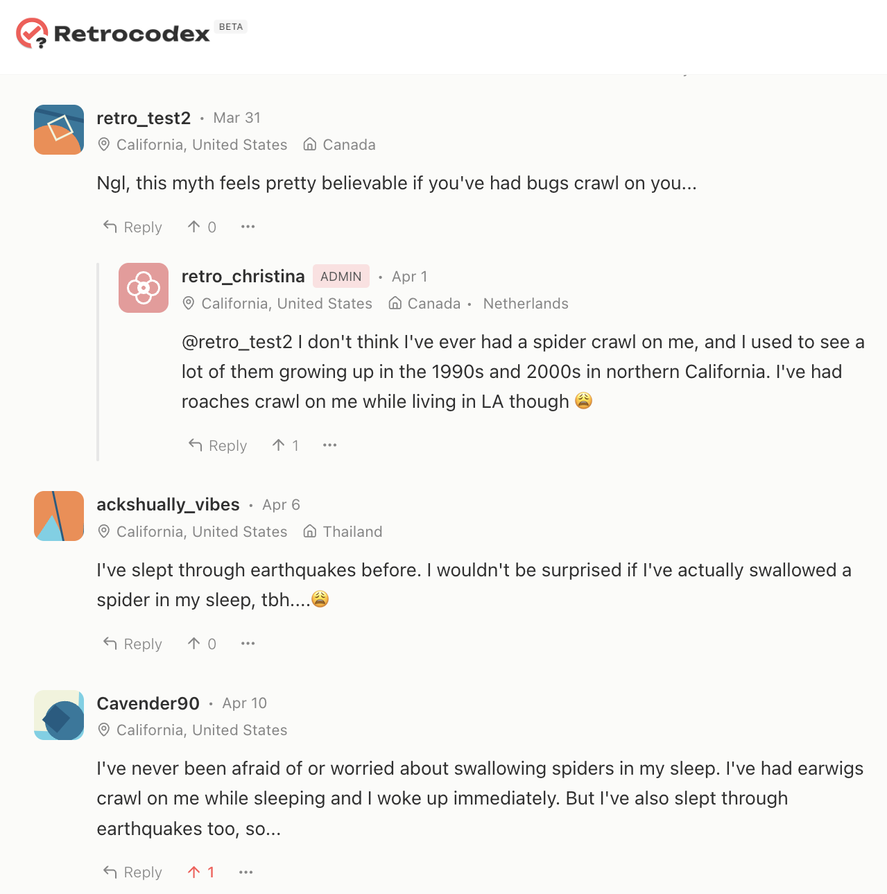
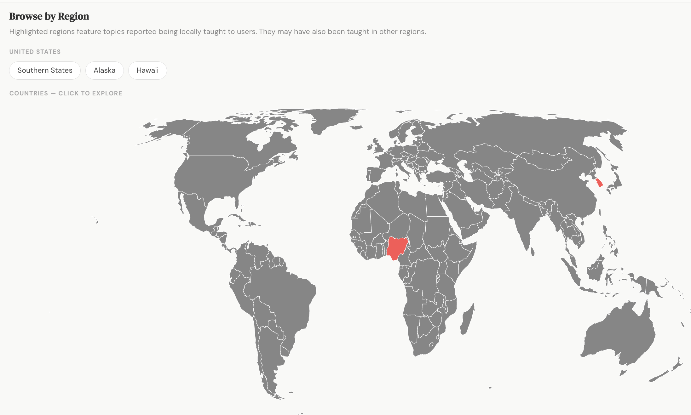
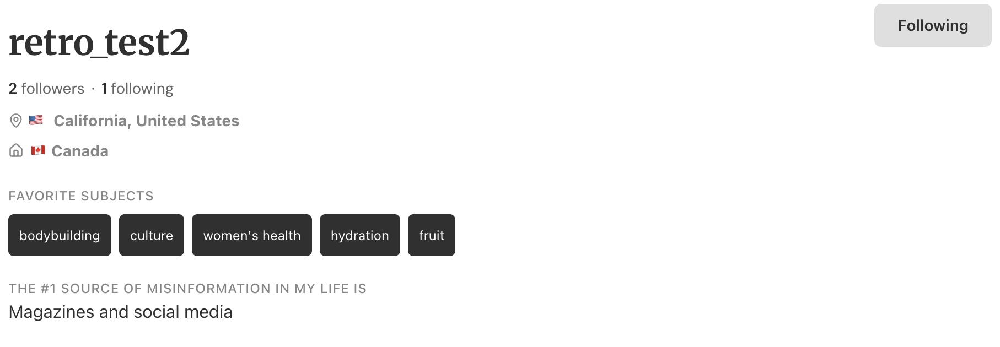
As previously mentioned, structuring the site by decade alone wouldn't be lead to full personalized accuracy — users from regions behind in curriculum updates may still be taught facts phased out elsewhere. As one respondent put it:
"I know I graduated in 2004, but since I grew up in a poorly-funded region, I think there's a lot more I learned that may be currently outdated than I can see on the results for my graduation decade. What if those facts are classified in the other decades?"
To accommodate that, the site can be explored through multiple pathways:
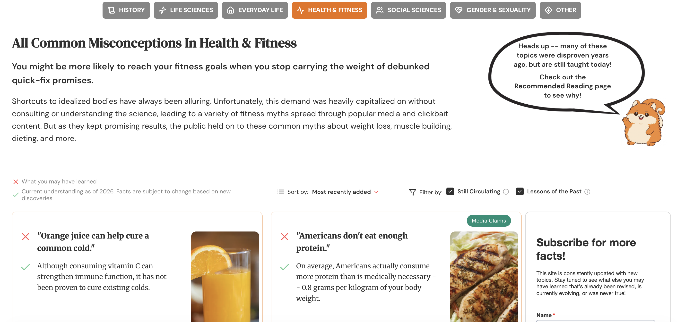
The most common pain point was "I feel like I can't trust what I've been taught." Getting disillusioned, disappointed users to trust a new product wasn't going to be easy. To design for trust, I included features such as:
The goal was to encourage learning and critical thinking rather than adjudicating right and wrong.
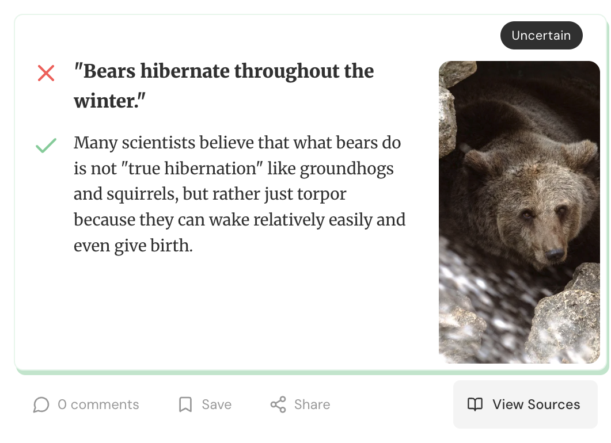
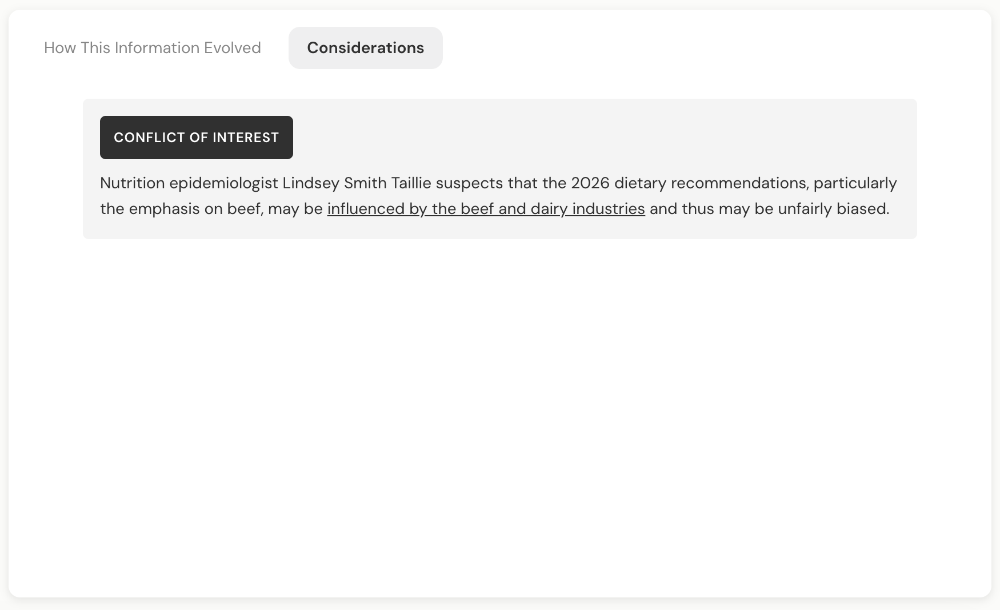
I started promoting Retrocodex online in May 2026 primarily on Threads and Reddit. So far, the majority of the feedback has been positive.
The vast majority of the negative feedback centered on a single theme: "I wasn't taught that!"
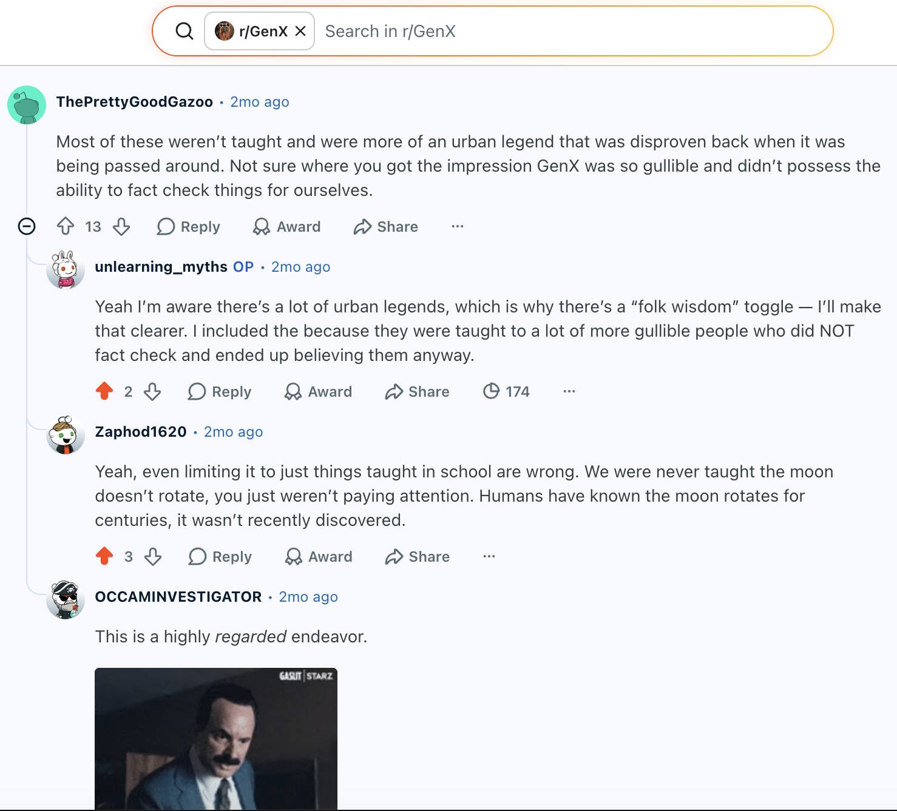
I inferred that the disappointed users did not see the disclaimers acknowledging that the site's content could not possibly apply to each person and that its content was consistently revised through user submissions and comments. Surely many of the other users weren't taught many of the site's available facts, but they most likely saw the disclaimers.
To address this consistent user pain point, I redesigned the disclaimer section that appeared above each fact list. I assumed some users were likely skipping the disclaimer section to read the facts, so I redesigned the disclaimers to be unskippable.
Instead of plain text sitting above the fact lists, the disclaimers now appear in a modal that always displays each time the user selects a decade on the homepage. Users are required to acknowledge each disclaimer before viewing the fact list.
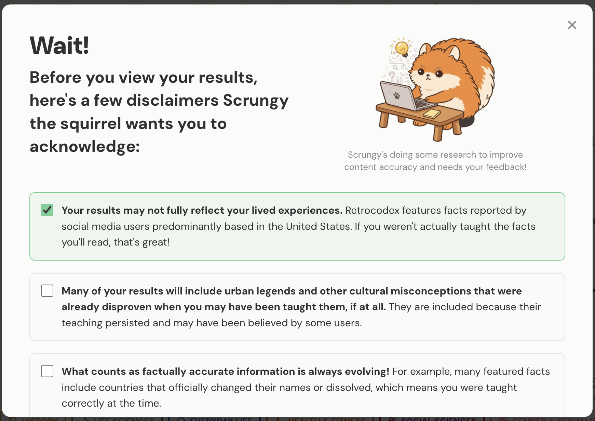
Since the beta shipped in late April 2026, Retrocodex has:
The project validated that a problem many believed couldn't be solved could be made approachable through careful and nuanced product design. I hope it'll continue to give everyone's brain a system update!
Submit it to Retrocodex.